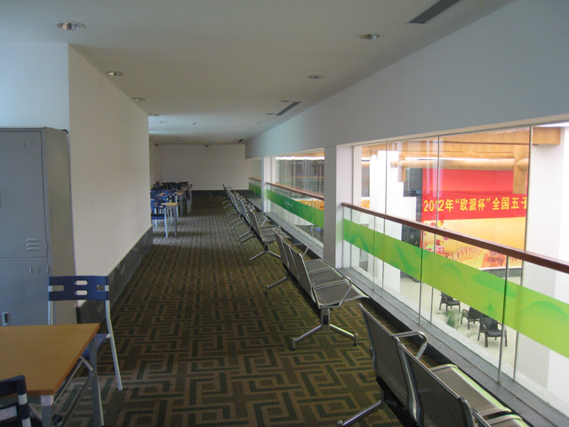
从照片2的A区大厅上盖步入
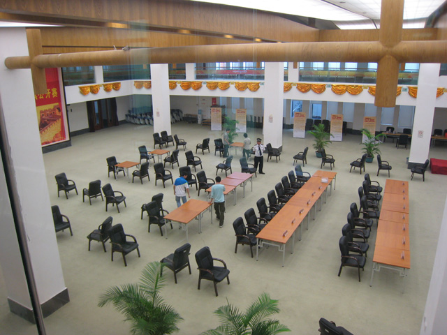
望下去
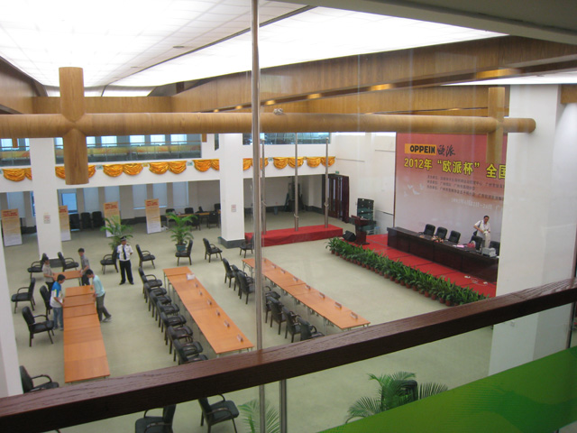
正在布置
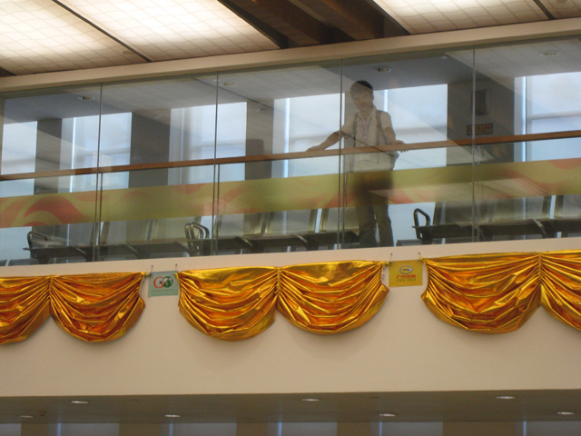
这条空中长廊专为观战而设
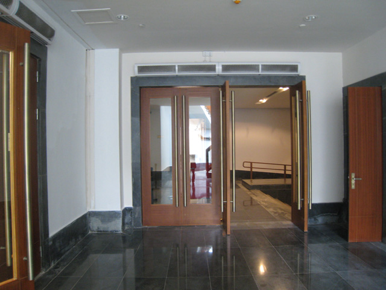
A区外围进入
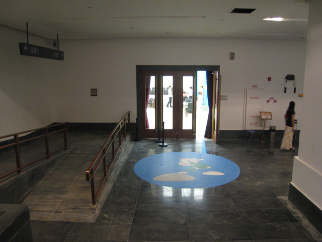
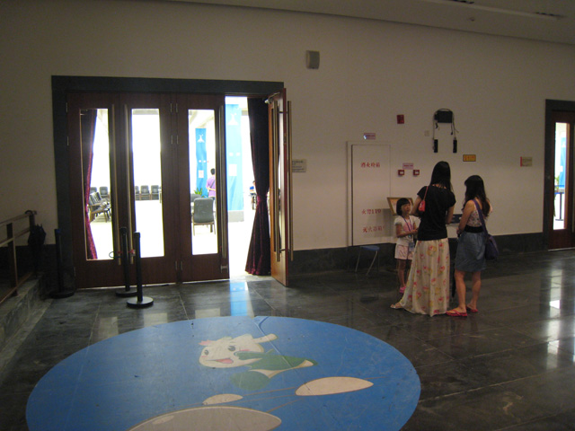
B区大厅门口
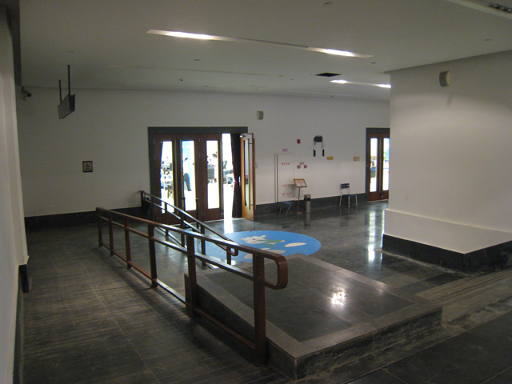
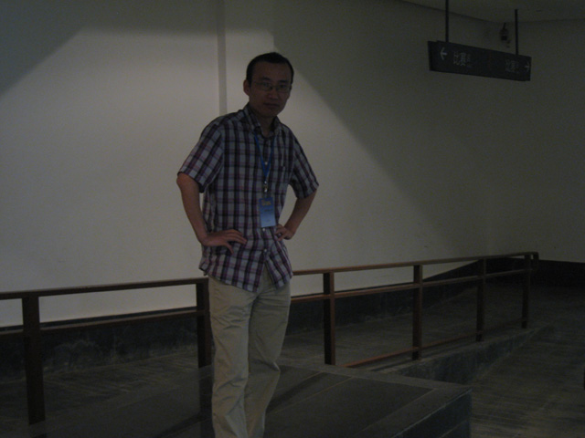
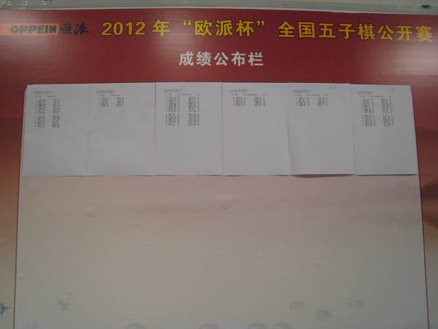
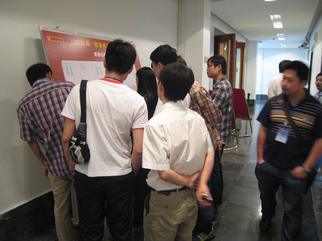
围观成绩公告栏
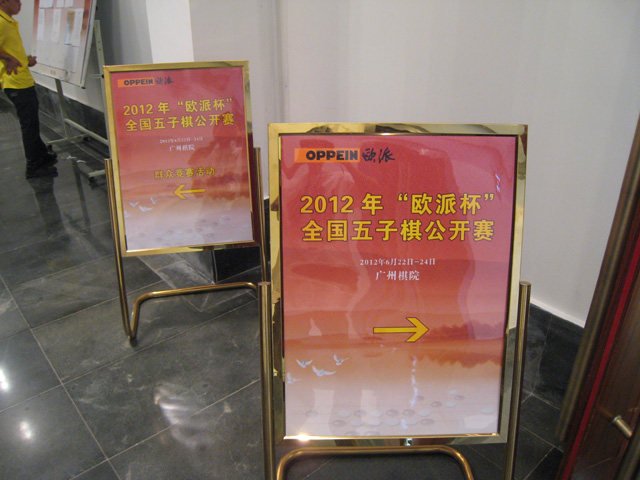
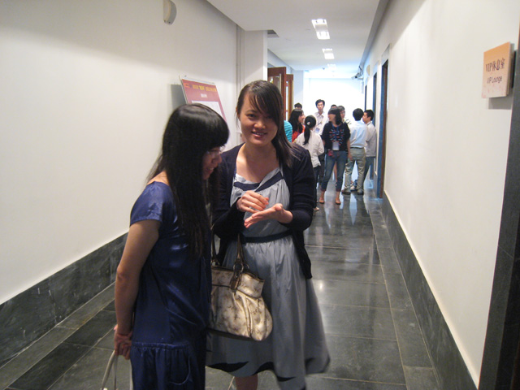
张艳萍
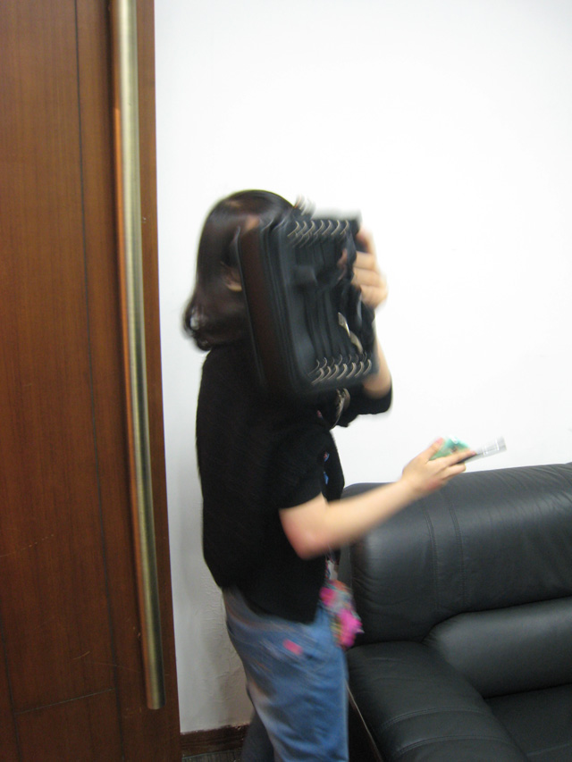
不让照，猜猜是谁，第一个猜中鲜花一朵
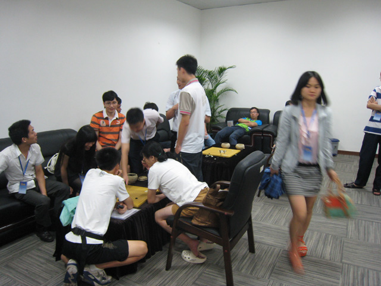
潇洒的身影
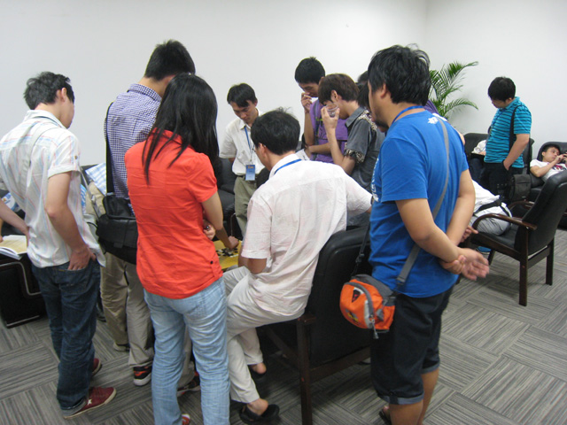
运动员休息室 让选手们休息、拆棋
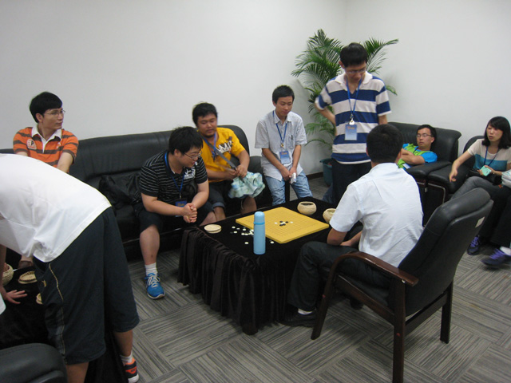
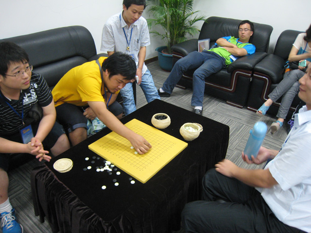

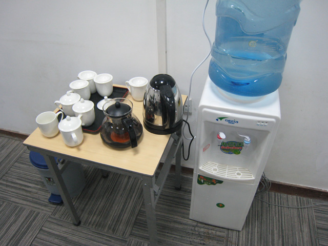
［此帖子已被 无尽 在 2012-6-25 21:43:38 编辑过］
［ 黄药师 于 2012-6-25 22:34:57 时花20金币送鲜花一朵］
［ 黄药师 于 2012-6-25 22:34:57 时花20金币送鲜花一朵］
［ 黄药师 于 2012-6-25 22:34:57 时花20金币送鲜花一朵］
［ 黄药师 于 2012-6-25 22:34:57 时花20金币送鲜花一朵］
［ 黄药师 于 2012-6-25 22:34:57 时花20金币送鲜花一朵］
［ 黄药师 于 2012-6-25 22:34:57 时花20金币送鲜花一朵］
［ 黄药师 于 2012-6-25 22:34:57 时花20金币送鲜花一朵］
［ 黄药师 于 2012-6-25 22:34:57 时花20金币送鲜花一朵］
［ 黄药师 于 2012-6-25 22:34:57 时花20金币送鲜花一朵］
［ 无尽 于 2012-6-25 21:51:37 时花20金币送鲜花一朵］
［ 路痴 于 2012-6-25 21:54:40 时花20金币送鲜花一朵］